Text & Konzeption
Perplexity
Wir haben den Google-Challenger Perplexity.ai aus den USA bei seinem Markteintritt in Deutschland begleitet – mit einer Launch-Kampagne, die Fragen beantwortet, die wir uns eh schon alle immer gestellt haben. Der Scan des QR-Codes genügte, um die Antworten direkt auf Perplexity zu entdecken.
Mit kuriosen und brisanten Fragen als Headlines ging die KI-gestützte Suchmaschine Perplexity in Berlin und München an den Start. Alle Fragen enden mit dem gleichen Call-to-Action: „Finde die Antwort auf Perplexity."
Meine Aufgaben:
- Text & Konzeption
- OOH, Online, Social Media
Motive Berlin
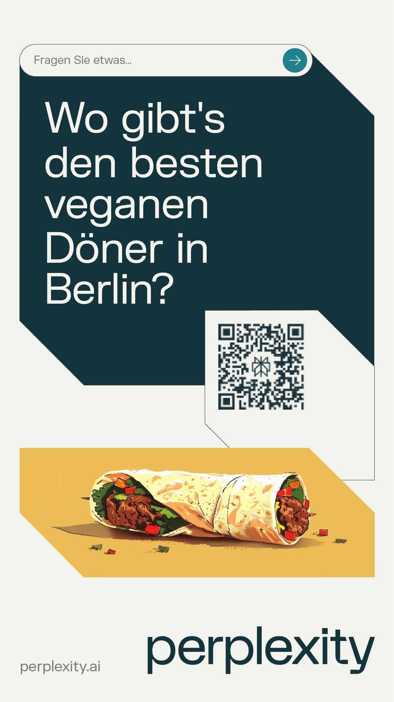
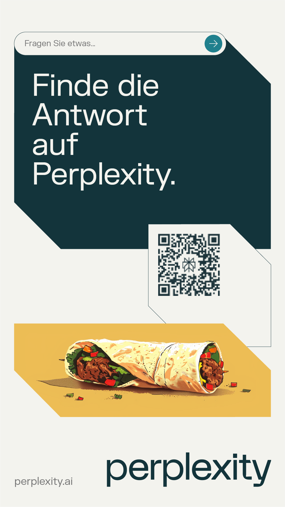
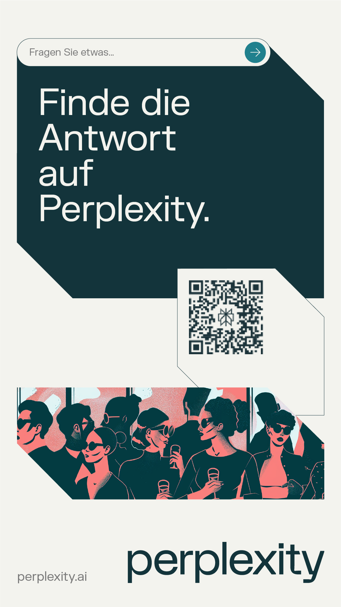
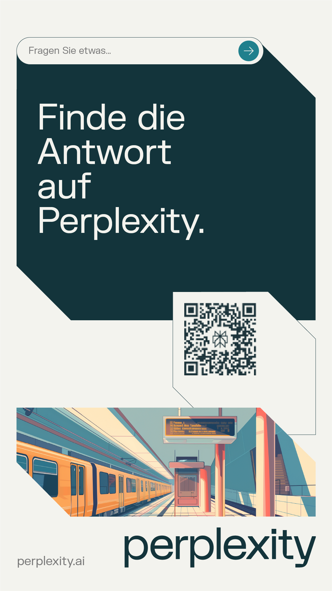
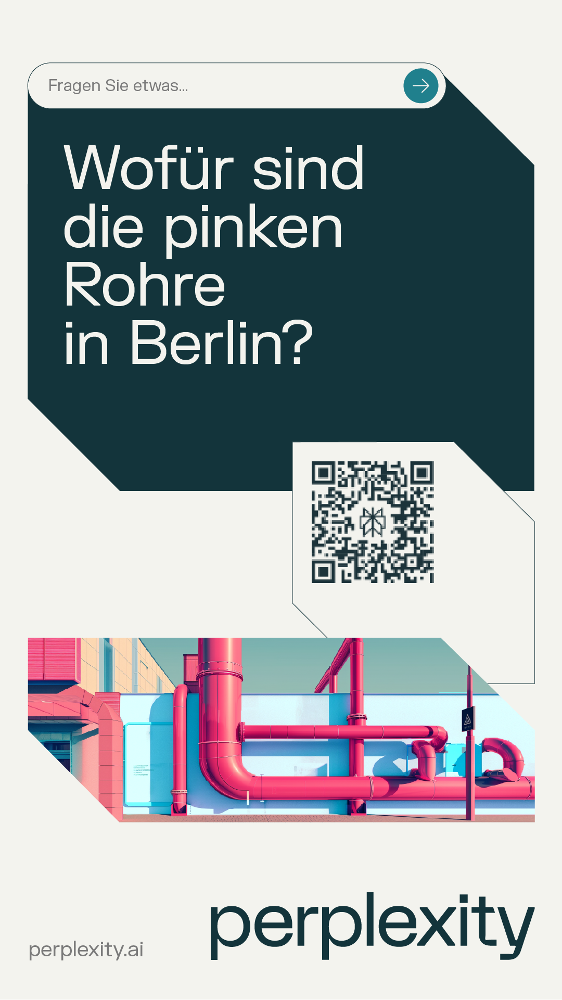
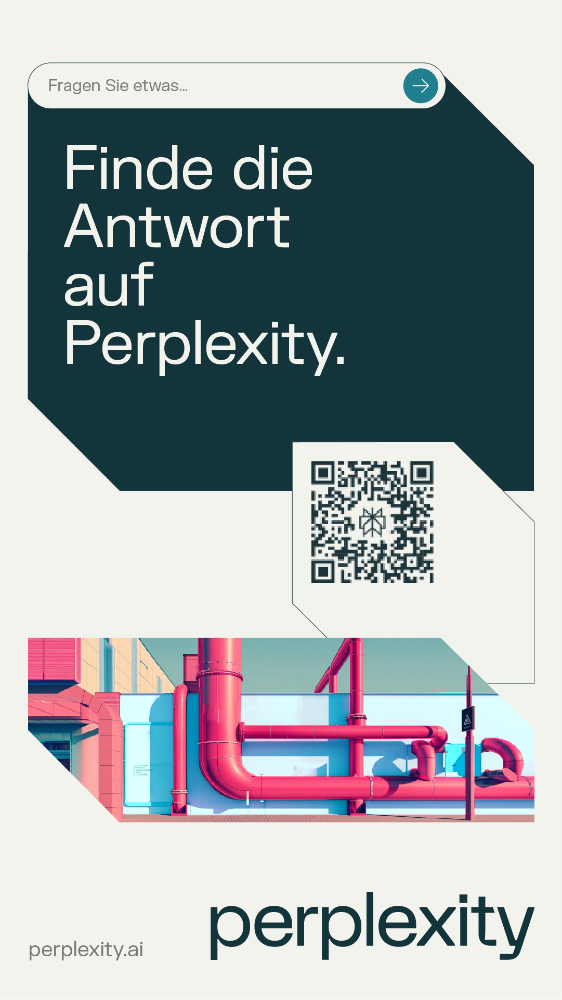
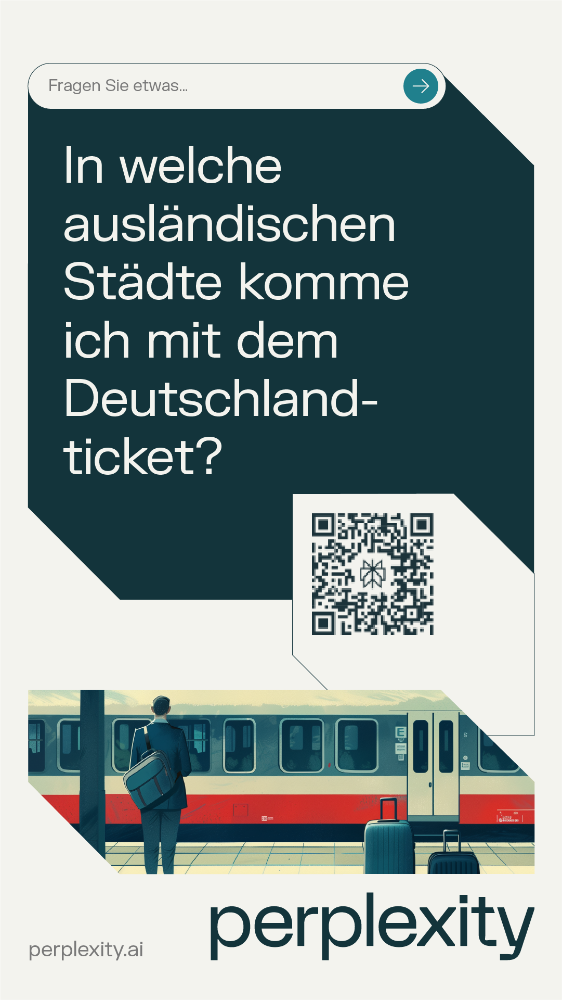

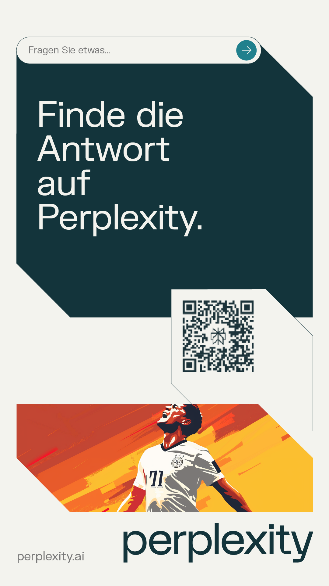
Motive München
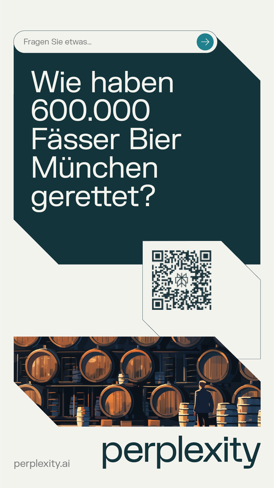
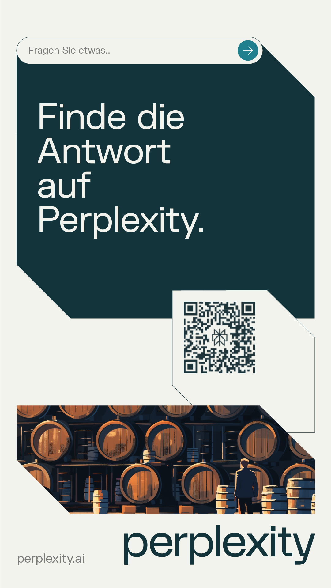
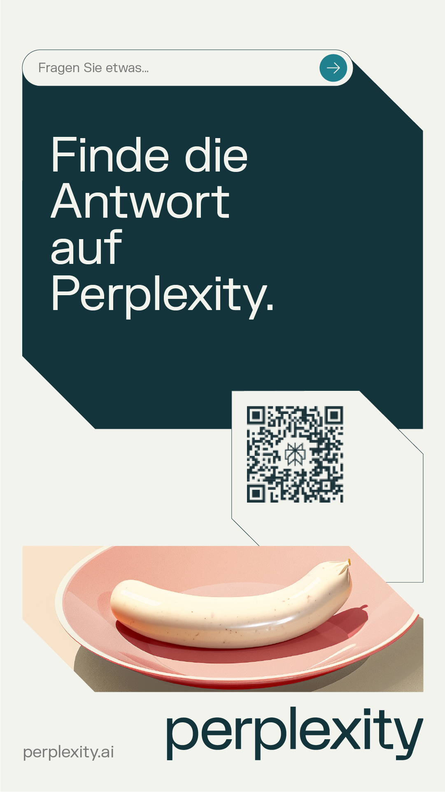
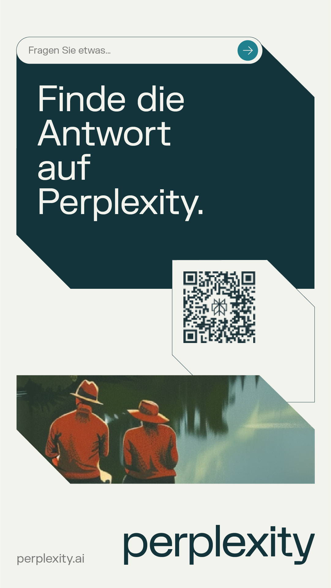

Weitere Motive in Action
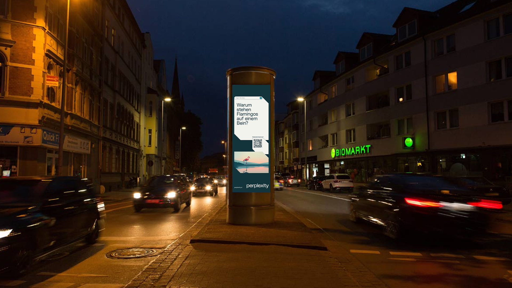
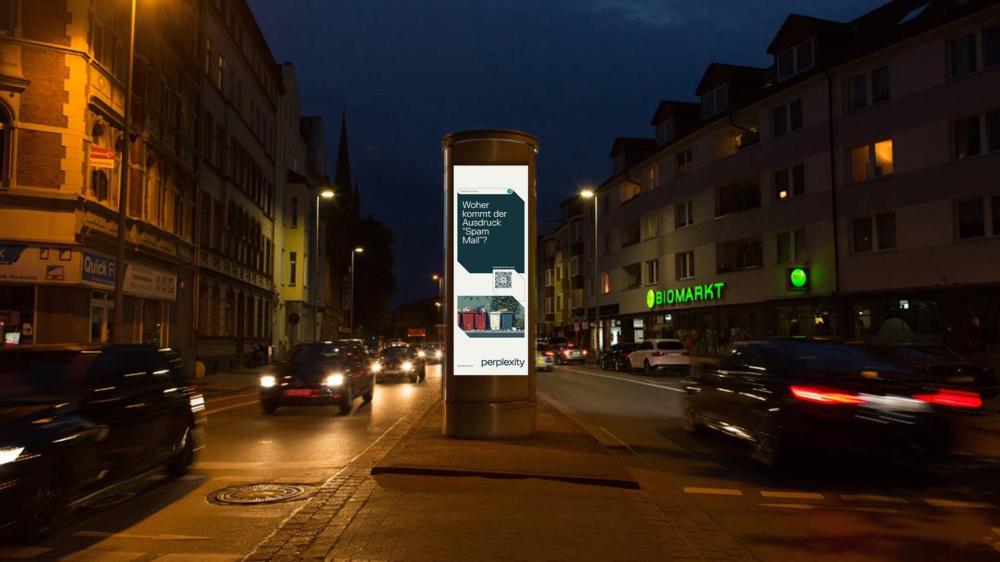
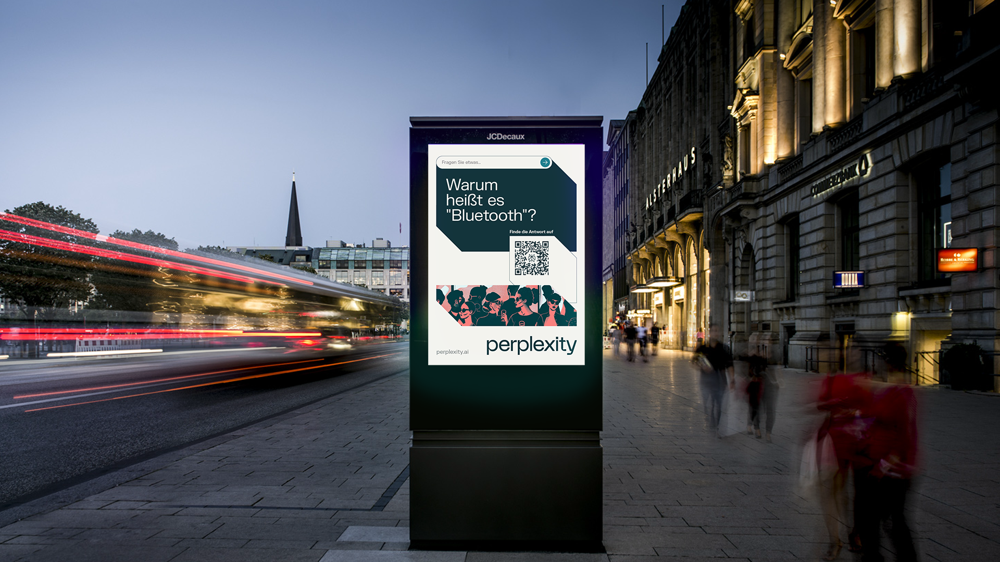
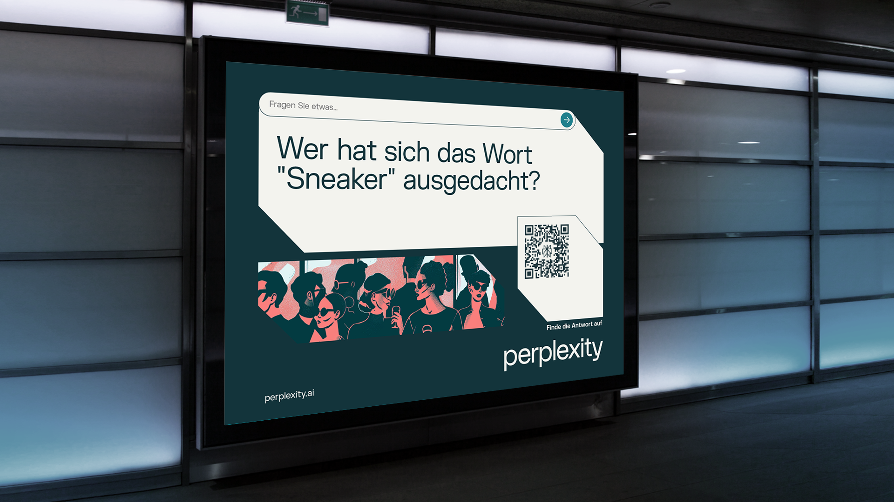
Eine Social-Media-Kooperation mit Fußballikonen wie Niclas Füllkrug und Marc-André ter Stegen während der Europameisterschaft 2024 sorgte für noch mehr Aufmerksamkeit.
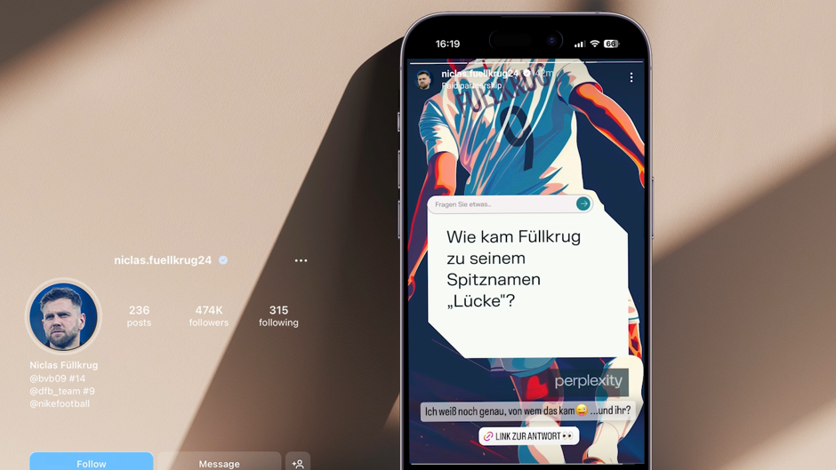
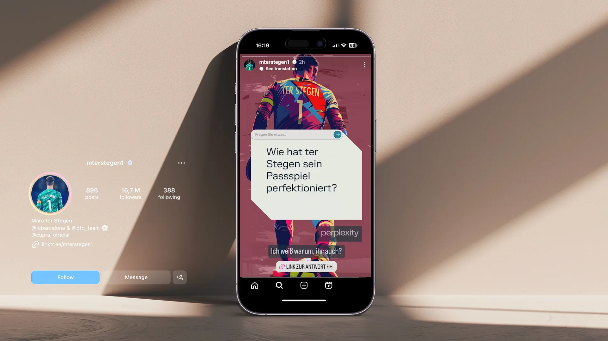